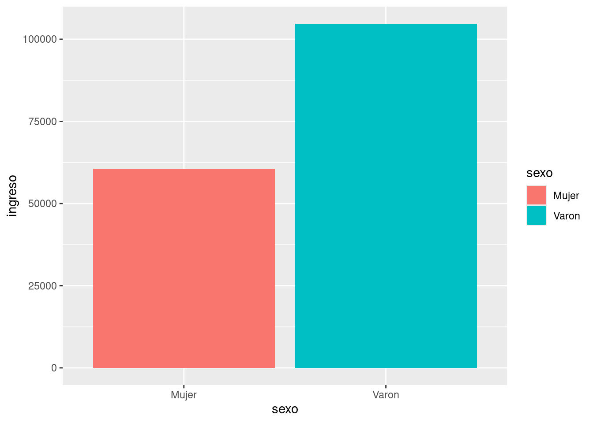

En el siguiente capítulo se analizará si existe una diferencia en el ingreso de los individuos en relación con su género. A su vez, se hará una comparación entre los años 2022 y 2023 para indicar si se presentó alguna diferencia. Para ello se utilizarán los datos obtenidos del Instituto Nacional de estadísticas y censo ( (2024)) obtenidos en los años ya mencionados.
6.2 Análisis
En las siguientes secciones, se buscará comaparar el ingreso de los hombres y las mujeres de la Argentina para identificar diferencias (o similitudes) en sus valores. De esta manera, se observará si existe alguna tendencia a que exista una diferencia entre los ingresos y ganancias según el género. A su vez, se realizará una comparación entre los años 2022 y 2023 para verificar si a lo largo de los meses el valor sufrió algún tipo de cambio. Además, se tendrán en cuenta los valores inflacionarios.
Para relaizar el procedimiento mencionado, se calculará la “mediana”, es decir, la estadística que representa el valor de posición central de los datos a analizar, en este caso, del monto de ingreso de ocupación principal. Para ello, se eliminaran todos los valores que sean iguales a cero para poder crear un resultado con mayor exactitud.
6.2.1 Ingresos en 2022
En esta primer instancia, se llega al resultado de que los hombres obtienen un ingreso de 80.000 pesos mientras que las mujeres promedian un sueldo de 60.000.
6.2.2 Ingresos en 2023
Luego del análisis del año 2023, se reconoce que, en dicho año, el sueldo de los hombres fue de 200.000 mientras que el de las mujeres de 150.000. De esta manera, logra observarse que perdura una diferencia entre ambos años y géneros.
6.2.3 Test de comparación según el año
Se utiliza el test de T student Student (1908) para comparar el valor del Ingreso en los diferentes años.
Welch Two Sample t-test
data: usu_individual_T422$P21 and usu_individual_T423$P21
t = -61.941, df = 59658, p-value < 2.2e-16
alternative hypothesis: true difference in means is not equal to 0
95 percent confidence interval:
-52772.72 -49535.39
sample estimates:
mean of x mean of y
30499.67 81653.73
En este caso se nota que hay diferencia entre ambos años analizados.
\(H_0\) : No existe diferencia en el valor del Ingreso entre ambos años.
\(H_1\) : Existe una diferencia entre los valores de ambos años.
Sin embargo, debe calcularse si dicha diferencia se deba a cuestiones en torno a la inflación o no:
Se logra identificar que la diferencia que existe entre los valores se debe a la inflación y no a otras cuestiones.
6.2.4 Gráficos
En el primer gráfico se intenta realizar una visualización de la diferencia entre los Ingresos según el género del año 2023. El segundo, tiene el mismo objetivo pero en relación al año 2022. De esta manera luego se puede crear una imágen visual para failitar la comparación. A su vez, puede notarse que en ambos casos, las mujeres poseen un valor de ingreso por debajo de los hombres, cuestión que no cambia a lo largo de este período.
6.2.5 Comparación según el género mediante gráficos
En este segmento se propone comparar los resultados de ambos años para visualizar la diferencia entre los géneros..
print(p1)print(p2)

6.3 Conclusión
A partir del análisis realizado, puede notarse como se manifiesta una disparidad en los salarios dependiendo del género. Logra observarse que, dentro de un mismo año, existe una brecha en el ingreso de alrededor de un 25%. En este caso, se puede destacar que en la Argentina, en promedio, los varones ganan ese porcentaje por encima del sueldo de las mujeres.
Por otro lado, puede notarse que el patrón no ha sufrido modificaciónes entre ambos años. En otras palabras, la diferencia en el ingreso está presente de igual manera en el año 2022 como en el 2023. De este modo, se logra observar que ninguno de los géneros se vio afectado, para bien ni para mal, con el pasar de esos meses.
Otro aspecto a tener en cuenta, es el fenómeno inflacionario que tuvo lugar en este país. De un año a otro, logra notarse una diferencia en los sueldos de ambos géneros ya que ambos parecen multiplicarse más del doble. En este caso particular, no significa un aumento en el poder adquisitivo, sino que se presentan unos sueldos que han sido golpeados por un proceso inflacionario. Al igual que se plantea en el capítulo “evolución del ingreso”, el aumento nominal, no es sinónimo de mayores ganancias en el valor real.